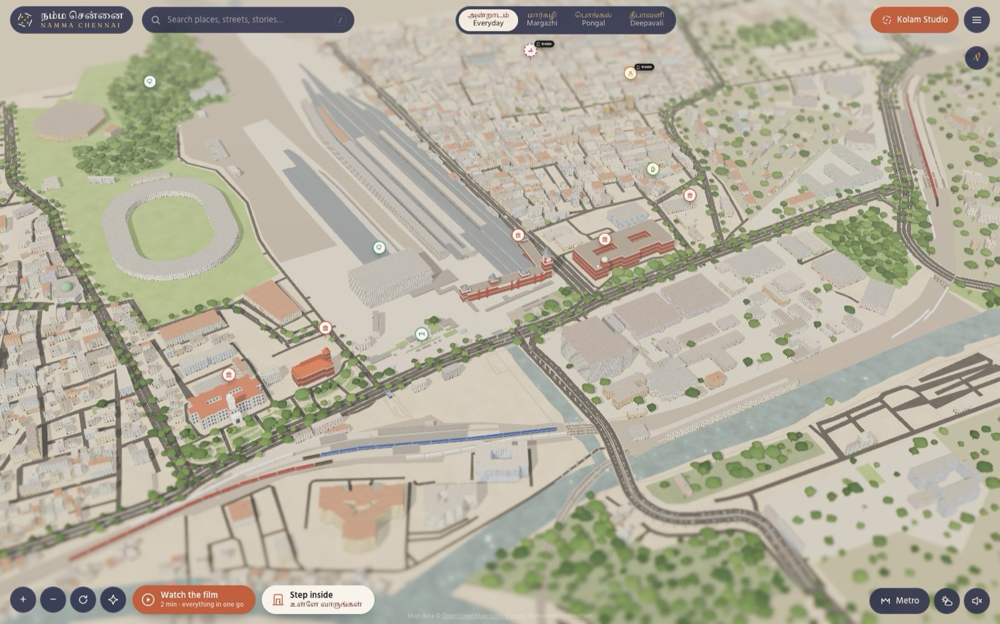
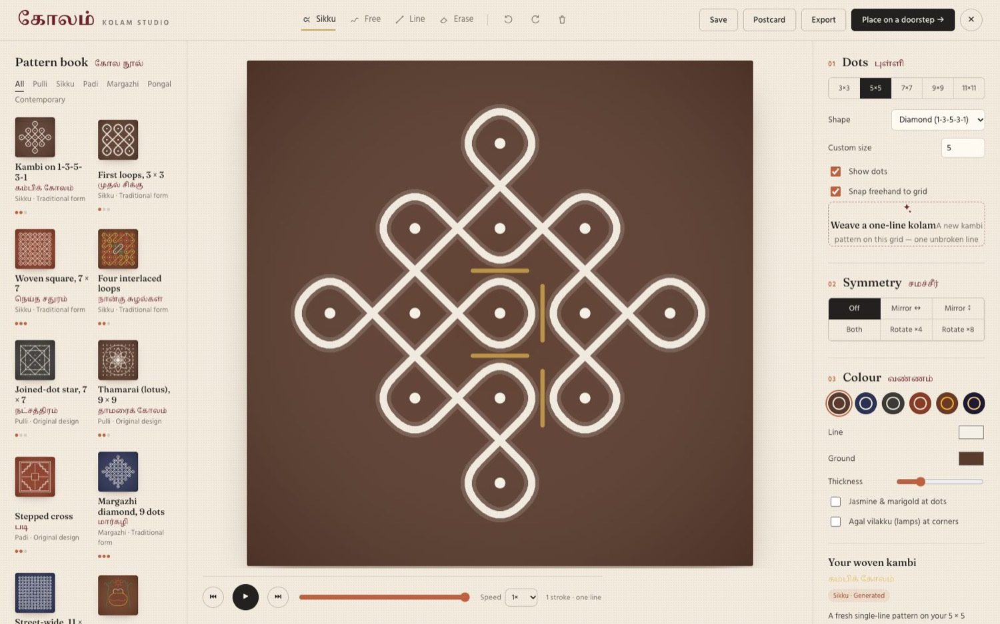
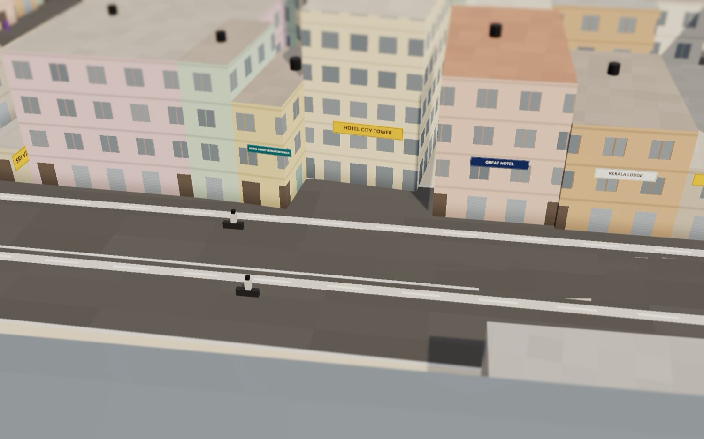
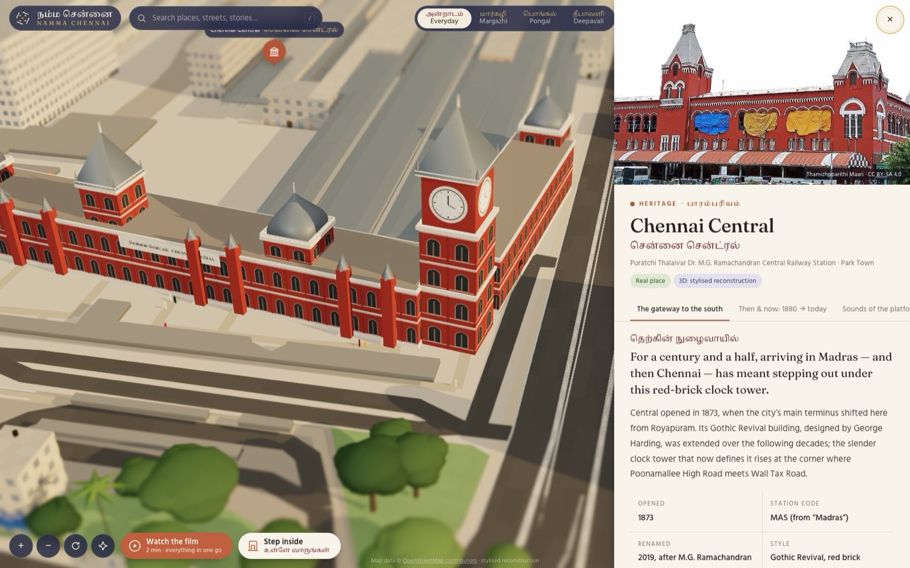
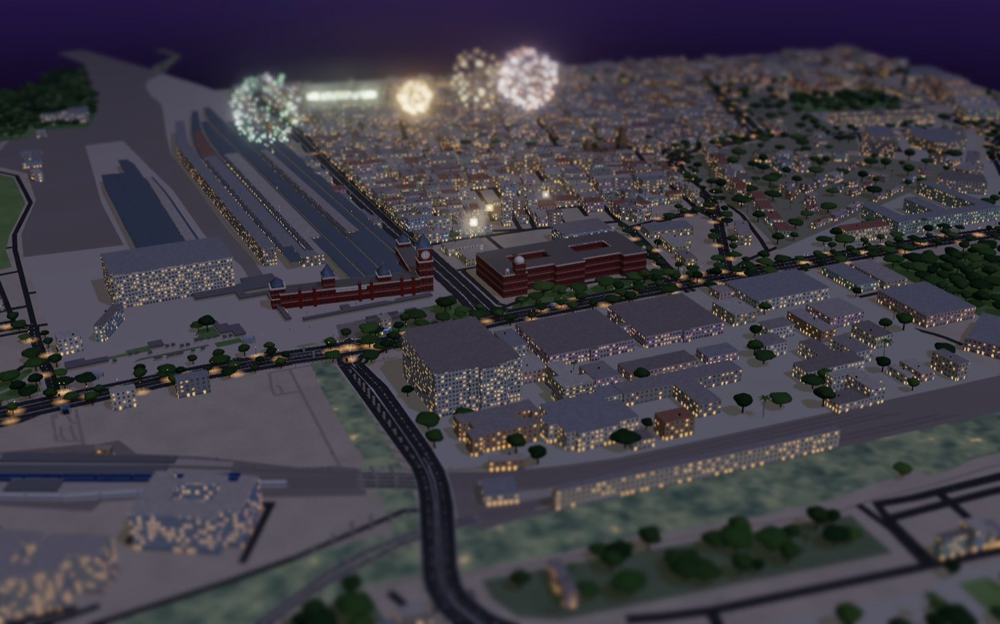
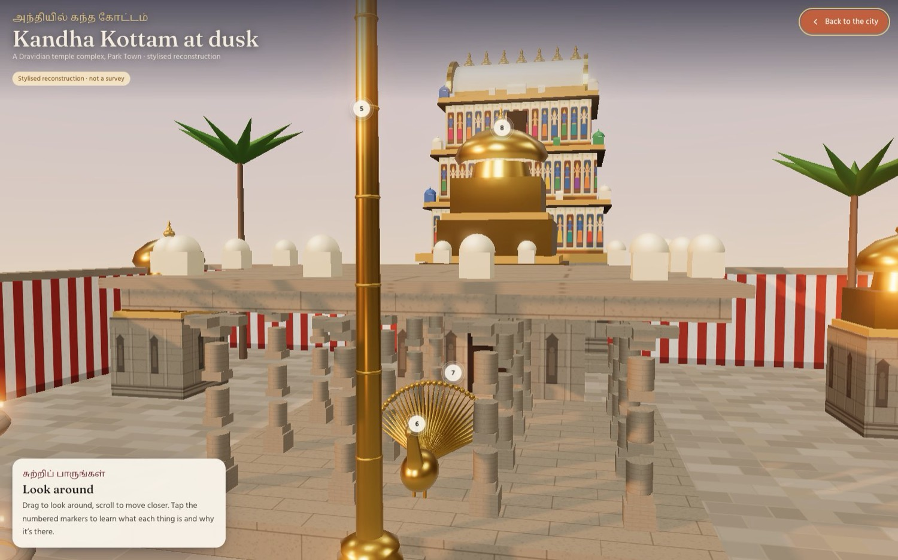
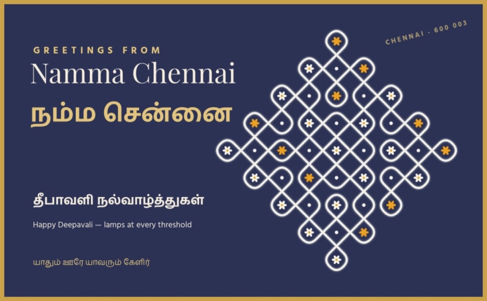
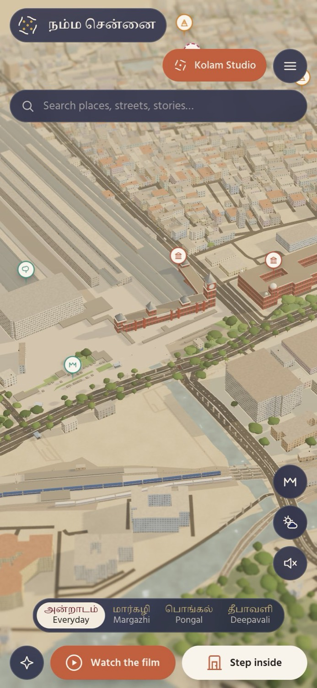
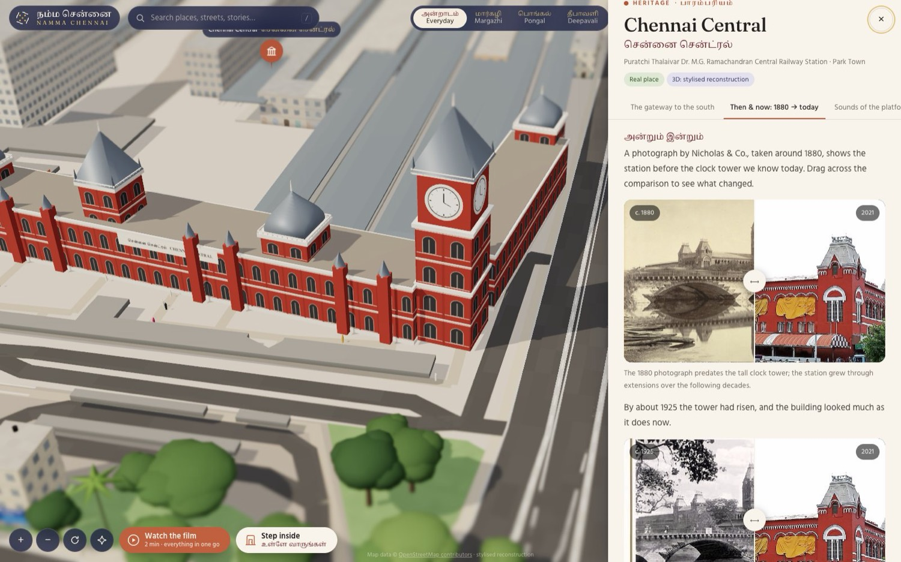

Every morning in Chennai, somebody bends down outside their front door and draws a kolam in rice flour. It takes a few minutes. By evening it is scuffed by scooters and feet, and tomorrow they draw a new one. Nobody films it. Nobody saves it. That is the whole point, and it is also exactly why I could not stop thinking about it when I started this project.
This is the story of Namma Chennai, a 3D miniature of central Chennai you can walk around in, built for the Cloudinary culture hackathon. It covers how I read the brief, the idea I threw away, how Claude Code and I actually split the work, and what Cloudinary really does in the thing. I will try to keep it honest, including the parts that went wrong.
Chapter oneThe brief
The prompt was simple on paper. Build something that celebrates culture, and use Cloudinary in a way that matters. That is a wide open sentence, and wide open is dangerous. You can spend three days picking a topic and one day building it.
So I did the boring thing first. I wrote down two lists. On the left, things I actually know about, because I live here. On the right, things Cloudinary is good at: delivering and transforming images, taking uploads straight from a browser, tagging, layering text on pictures. Then I looked for the overlap, and for something that did not already exist ten times over.
Culture projects tend to land in one of two shapes. A gallery of old photos, or a list of festivals with nice colours. Both are fine. Neither makes you feel anything.

Chapter twoWhy not a photo gallery
My first idea really was a gallery. People upload photos of festivals, Cloudinary resizes them, done. It would have worked in a weekend. It would also have been forgettable, because a grid of thumbnails treats culture like a museum exhibit. Behind glass, finished, past tense.
Chennai is not past tense. It is a city where the temple tank, the metro and the tea stall share one street, and where a festival changes how the whole neighbourhood looks for a week. I wanted a place, not a folder. Somewhere you could stand, look around, and notice that Deepavali morning feels different from Margazhi dawn.
I wanted a place, not a folder.
That decision made everything harder, and everything better. A place needs streets, and streets need to be roughly where they really are.
Chapter threeThe kolam problem
The thing that tied it together was the kolam. It is culture you do, not culture you look at. It is geometry, it is daily, it is temporary, and it is something almost every household in the city does without thinking of it as art.
So the miniature needed a doorstep for every home, and a studio where you can draw one yourself. You pick a dot grid, you weave a line around the dots, and your pattern appears on a doorstep in the city. Pongal courtyard, Deepavali morning, Margazhi dawn, each with its own kolam style and its own light.

Here is where Cloudinary stopped being a checkbox for me. A kolam is temporary on the street, but a drawing on a screen can be kept. I could take a person's kolam, upload it once, and turn it into a postcard they can send to someone. A temporary thing, made permanent by choice. That felt like the right use of the tool, so I built toward it.
Chapter fourBuilding it with Claude Code
I built this with Claude Code, and I want to be straight about what that means, because the phrase gets thrown around loosely.
I did not type one prompt and receive a city. It was a long conversation, a lot of it arguing. I decided what the project was, what was in and what was out, what a festival should feel like, and what was too much. Claude Code did a huge amount of the typing: wiring up Three.js, turning map data into buildings, writing the kolam weaving logic, setting up the Cloudinary calls. Then I looked at the result in the browser and said what was wrong. Roads too wide. Night too dark. Temple tower looks like a cake.

The loop that worked best was dull but effective. Describe the thing, let it build a version, open it, take a screenshot, point at what is off, repeat. When the app is a 3D scene, a screenshot says more than a paragraph. I also got it to drive a real browser to capture the views, which is how every picture in this post and in the project guide PDF was made, from the live site.
What it did not do was decide what mattered. It will happily build whatever you ask. The taste, the Tamil text, the choice to show a clock tower and a temple and a tea shop instead of a generic skyline, those were mine to get right, and I spent real time on them.

The festivals
The city switches between Pongal, Deepavali, Margazhi and an everyday mode. Lights, kolam styles, colours and sounds all change. Deepavali has fireworks, which I turned down more than once because they started stealing attention from everything else.


Chapter fiveWhat Cloudinary does here
There is no backend in this project. No server, no database. The browser talks straight to Cloudinary using a cloud name and an unsigned upload preset, and that is all. I never put an API secret anywhere in the code, since anything shipped to a browser is public. Here is the actual list of jobs it does.
| What | How Cloudinary helps |
|---|---|
| Archive photos | Original images are fetched through Cloudinary and resized for every spot they appear, from a small map pin to a full screen view, with automatic format and quality. |
| Memories from visitors | People upload photos, video or audio with tags and captions. They show up as pins on the map next to the place they belong to. |
| AI auto tagging | When a photo comes in, tags like oil lamp or cattle come back. The app uses them to file a memory under Deepavali or Pongal if the visitor did not choose one. |
| Kolam postcards | One uploaded PNG becomes a full postcard using padding, Tamil and English text layers, a tilted postmark and a gold border. All of it is URL parameters. |
| The share card | The preview image you see when the link is shared is a render of the city, faded and titled in Tamil and English, built entirely with a Cloudinary URL. |

The postcard is my favourite part, and it surprised me. I expected image delivery to be the main story. But building the postcard out of nothing except a URL, with no canvas code and no image library, made it click for me that Cloudinary is closer to a design tool you talk to through links than a place that stores pictures.
Chapter sixWhat broke
Plenty. A few that are worth admitting to:
- Cloudinary's fetch delivery is not always switched on. Some accounts block it by default. So at startup the app checks whether it works, and if not, photos load straight from Wikimedia and nothing visibly breaks. I would rather the site be a little less fancy than show a wall of broken images.
- Live map data is slow and sometimes just fails. The app can pull from OpenStreetMap at runtime, but production ships a baked offline copy so the city appears fast and does not depend on a public server staying up.
- My screenshots lied. The first storm and street captures were washed out or mostly grey ground. Taking screenshots by script means you have to choose the camera on purpose, not just hit capture. I redid several.
- Mobile. A 3D city on a phone is a negotiation. There is a quality setting, a reduced motion option, and fewer things moving by default.

Chapter sevenBeing honest about it
This is a miniature, not a survey. Building heights are estimated, a few landmarks are modelled by hand, and some details are simplified. The project says so inside the app, on the About screen, and the guide lists what is real, what is approximated and what is illustrative. Culture is the one place I did not want to be sloppy with the truth, because people will read it as fact.
If I got something wrong about your street, your temple or your festival, I genuinely want to hear it. The Share a Memory button exists for that reason too.

Chapter eightWhat I learned
- Pick the feeling first. I knew I wanted people to feel the morning kolam energy. The tech followed from that, not the other way round.
- Use the sponsor's tool for the thing only it makes easy. The postcard and share card are things I would not have attempted without Cloudinary's transformations.
- AI is a very fast pair of hands, not a taste. You still have to know what good looks like, and say so out loud.
- Ship the boring checks. Fallbacks, a PDF guide, SEO tags, a sitemap. Nobody tweets about those, but they decide whether the thing works for a stranger.
If you only do one thing, open the city, pick Pongal, go to the studio, and draw a kolam. Then send the postcard to someone back home.
Come walk around
Free, runs in your browser, no sign in. Better with headphones.
Open Namma Chennai View the code Project guide (PDF)